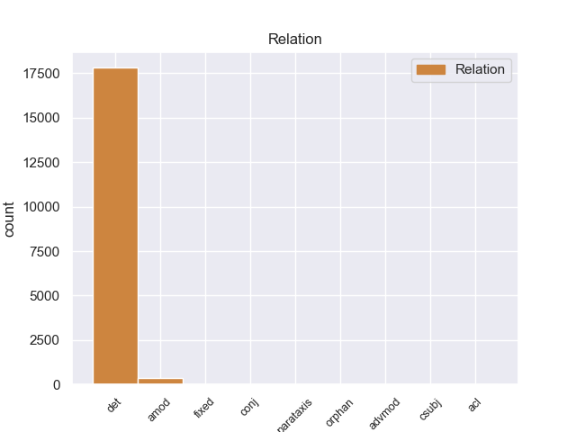
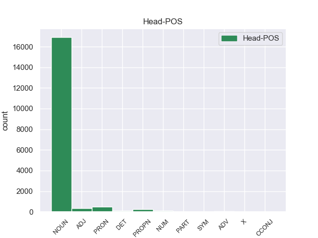
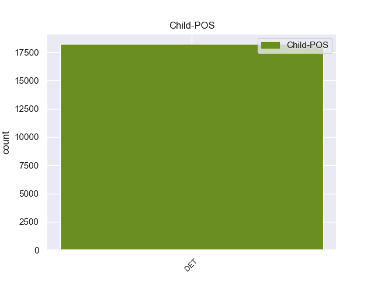

Distribution of features within this leaf



Morphosyntax Rules sorted by frequency.
- When the dependent token is the determiner(det) of the head token, and the head token is NOUN and the dependent token is DET, the Case needs to be Nom.
1 - _ _ _ _ 0 _ _ _
2 Все весь DET _ Case=Nom|Number=Plur 3 det 3:det _
3 дороги дорога NOUN _ Animacy=Inan|Case=Nom|Gender=Fem|Number=Plur 0 _ _ _
4 куда-нибудь _ _ _ _ 0 _ _ _
5 ведут _ _ _ _ 0 _ _ _
6 , _ _ _ _ 0 _ _ _
7 - _ _ _ _ 0 _ _ _
8 сказал _ _ _ _ 0 _ _ _
9 он _ _ _ _ 0 _ _ _
10 с _ _ _ _ 0 _ _ _
11 кроткой _ _ _ _ 0 _ _ _
12 убежденностью _ _ _ _ 0 _ _ _
13 и _ _ _ _ 0 _ _ _
14 , _ _ _ _ 0 _ _ _
15 водворив _ _ _ _ 0 _ _ _
16 очки _ _ _ _ 0 _ _ _
17 назад _ _ _ _ 0 _ _ _
18 , _ _ _ _ 0 _ _ _
19 принялся _ _ _ _ 0 _ _ _
20 за _ _ _ _ 0 _ _ _
21 работу _ _ _ _ 0 _ _ _
22 . _ _ _ _ 0 _ _ _
1 И _ _ _ _ 0 _ _ _
2 все _ _ _ _ 0 _ _ _
3 же _ _ _ _ 0 _ _ _
4 пролет _ _ _ _ 0 _ _ _
5 каждой _ _ _ _ 0 _ _ _
6 сороки _ _ _ _ 0 _ _ _
7 , _ _ _ _ 0 _ _ _
8 гортанные _ _ _ _ 0 _ _ _
9 вскрики _ _ _ _ 0 _ _ _
10 сойки _ _ _ _ 0 _ _ _
11 , _ _ _ _ 0 _ _ _
12 оповещавшей _ _ _ _ 0 _ _ _
13 лес _ _ _ _ 0 _ _ _
14 о _ _ _ _ 0 _ _ _
15 чужаках _ _ _ _ 0 _ _ _
16 , _ _ _ _ 0 _ _ _
17 трепыхание _ _ _ _ 0 _ _ _
18 лазоревок _ _ _ _ 0 _ _ _
19 в _ _ _ _ 0 _ _ _
20 голых _ _ _ _ 0 _ _ _
21 кустах _ _ _ _ 0 _ _ _
22 , _ _ _ _ 0 _ _ _
23 шорох _ _ _ _ 0 _ _ _
24 палой _ _ _ _ 0 _ _ _
25 листвы _ _ _ _ 0 _ _ _
26 , _ _ _ _ 0 _ _ _
27 потревоженной _ _ _ _ 0 _ _ _
28 ветром _ _ _ _ 0 _ _ _
29 , _ _ _ _ 0 _ _ _
30 сухо _ _ _ _ 0 _ _ _
31 звенящий _ _ _ _ 0 _ _ _
32 пролет _ _ _ _ 0 _ _ _
33 дроздов _ _ _ _ 0 _ _ _
34 к _ _ _ _ 0 _ _ _
35 запозднившейся _ _ _ _ 0 _ _ _
36 рябине _ _ _ _ 0 _ _ _
37 - _ _ _ _ 0 _ _ _
38 все весь DET _ Case=Nom|Gender=Neut|Number=Sing 39 det 39:det _
39 это это PRON _ _ 0 _ _ _
40 заставляло _ _ _ _ 0 _ _ _
41 его _ _ _ _ 0 _ _ _
42 вздрагивать _ _ _ _ 0 _ _ _
43 от _ _ _ _ 0 _ _ _
44 нетерпения _ _ _ _ 0 _ _ _
45 и _ _ _ _ 0 _ _ _
46 надежды _ _ _ _ 0 _ _ _
47 . _ _ _ _ 0 _ _ _
1 Такой такой DET _ Case=Nom|Gender=Masc|Number=Sing 3 det 3:det _
2 вот _ _ _ _ 0 _ _ _
3 хвойный хвойный ADJ _ Case=Nom|Degree=Pos|Gender=Masc|Number=Sing 0 _ _ _
4 , _ _ _ _ 0 _ _ _
5 с _ _ _ _ 0 _ _ _
6 красным _ _ _ _ 0 _ _ _
7 подножием _ _ _ _ 0 _ _ _
8 бор _ _ _ _ 0 _ _ _
9 находился _ _ _ _ 0 _ _ _
10 сразу _ _ _ _ 0 _ _ _
11 за _ _ _ _ 0 _ _ _
12 таинственной _ _ _ _ 0 _ _ _
13 дачей _ _ _ _ 0 _ _ _
14 , _ _ _ _ 0 _ _ _
15 которую _ _ _ _ 0 _ _ _
16 мы _ _ _ _ 0 _ _ _
17 подвергли _ _ _ _ 0 _ _ _
18 неудачному _ _ _ _ 0 _ _ _
19 налету _ _ _ _ 0 _ _ _
20 под _ _ _ _ 0 _ _ _
21 водительством _ _ _ _ 0 _ _ _
22 бесстрашного _ _ _ _ 0 _ _ _
23 атамана _ _ _ _ 0 _ _ _
24 ; _ _ _ _ 0 _ _ _
1 Еще _ _ _ _ 0 _ _ _
2 недавно _ _ _ _ 0 _ _ _
3 Павлов _ _ _ _ 0 _ _ _
4 умел _ _ _ _ 0 _ _ _
5 жить _ _ _ _ 0 _ _ _
6 так, _ _ _ _ 0 _ _ _
7 ЧТОБЫ _ _ _ _ 0 _ _ _
8 одни один DET _ Case=Nom|Degree=Pos|Number=Plur 9 amod 9:amod _
9 обязанности обязанность NOUN _ Animacy=Inan|Case=Nom|Gender=Fem|Number=Plur 0 _ _ _
10 не _ _ _ _ 0 _ _ _
11 были _ _ _ _ 0 _ _ _
12 в _ _ _ _ 0 _ _ _
13 ущерб _ _ _ _ 0 _ _ _
14 другим _ _ _ _ 0 _ _ _
15 чтобы _ _ _ _ 0 _ _ _
16 любовь _ _ _ _ 0 _ _ _
17 к _ _ _ _ 0 _ _ _
18 семье _ _ _ _ 0 _ _ _
19 не _ _ _ _ 0 _ _ _
20 мешала _ _ _ _ 0 _ _ _
21 работе _ _ _ _ 0 _ _ _
22 а _ _ _ _ 0 _ _ _
23 увлеченность _ _ _ _ 0 _ _ _
24 работой _ _ _ _ 0 _ _ _
25 - _ _ _ _ 0 _ _ _
26 он _ _ _ _ 0 _ _ _
27 работал _ _ _ _ 0 _ _ _
28 тогда _ _ _ _ 0 _ _ _
29 на _ _ _ _ 0 _ _ _
30 строительстве _ _ _ _ 0 _ _ _
31 гигантской _ _ _ _ 0 _ _ _
32 гостиницы _ _ _ _ 0 _ _ _
33 в _ _ _ _ 0 _ _ _
34 Зарядье _ _ _ _ 0 _ _ _
35 - _ _ _ _ 0 _ _ _
36 не _ _ _ _ 0 _ _ _
37 вредила _ _ _ _ 0 _ _ _
38 семье _ _ _ _ 0 _ _ _
39 . _ _ _ _ 0 _ _ _
1 По _ _ _ _ 0 _ _ _
2 главной _ _ _ _ 0 _ _ _
3 улице _ _ _ _ 0 _ _ _
4 города _ _ _ _ 0 _ _ _
5 , _ _ _ _ 0 _ _ _
6 куда _ _ _ _ 0 _ _ _
7 выходила _ _ _ _ 0 _ _ _
8 наша наш DET _ Case=Nom|Gender=Fem|Number=Sing 10 det 10:det _
9 Малая _ _ _ _ 0 _ _ _
10 Блиновская Блиновский PROPN _ _ 0 _ _ _
11 , _ _ _ _ 0 _ _ _
12 гуляли _ _ _ _ 0 _ _ _
13 среди _ _ _ _ 0 _ _ _
14 городской _ _ _ _ 0 _ _ _
15 толпы _ _ _ _ 0 _ _ _
16 высокие _ _ _ _ 0 _ _ _
17 , _ _ _ _ 0 _ _ _
18 стройные _ _ _ _ 0 _ _ _
19 , _ _ _ _ 0 _ _ _
20 светловолосые _ _ _ _ 0 _ _ _
21 мужчины _ _ _ _ 0 _ _ _
22 и _ _ _ _ 0 _ _ _
23 под _ _ _ _ 0 _ _ _
24 стать _ _ _ _ 0 _ _ _
25 им _ _ _ _ 0 _ _ _
26 высокие _ _ _ _ 0 _ _ _
27 , _ _ _ _ 0 _ _ _
28 гибкие _ _ _ _ 0 _ _ _
29 женщины _ _ _ _ 0 _ _ _
30 , _ _ _ _ 0 _ _ _
31 - _ _ _ _ 0 _ _ _
32 все _ _ _ _ 0 _ _ _
33 в _ _ _ _ 0 _ _ _
34 легкой _ _ _ _ 0 _ _ _
35 серой _ _ _ _ 0 _ _ _
36 или _ _ _ _ 0 _ _ _
37 кремовой _ _ _ _ 0 _ _ _
38 фланели _ _ _ _ 0 _ _ _
39 , _ _ _ _ 0 _ _ _
40 в _ _ _ _ 0 _ _ _
41 красивых _ _ _ _ 0 _ _ _
42 мягких _ _ _ _ 0 _ _ _
43 туфлях _ _ _ _ 0 _ _ _
44 на _ _ _ _ 0 _ _ _
45 толстой _ _ _ _ 0 _ _ _
46 каучуковой _ _ _ _ 0 _ _ _
47 подошве _ _ _ _ 0 _ _ _
48 . _ _ _ _ 0 _ _ _
1 Как _ _ _ _ 0 _ _ _
2 средство _ _ _ _ 0 _ _ _
3 политической _ _ _ _ 0 _ _ _
4 борьбы _ _ _ _ 0 _ _ _
5 его _ _ _ _ 0 _ _ _
6 применяют _ _ _ _ 0 _ _ _
7 левые _ _ _ _ 0 _ _ _
8 и _ _ _ _ 0 _ _ _
9 правые _ _ _ _ 0 _ _ _
10 , _ _ _ _ 0 _ _ _
11 умеренные _ _ _ _ 0 _ _ _
12 и _ _ _ _ 0 _ _ _
13 радикалы _ _ _ _ 0 _ _ _
14 , _ _ _ _ 0 _ _ _
15 ретрограды _ _ _ _ 0 _ _ _
16 и _ _ _ _ 0 _ _ _
17 авангардисты _ _ _ _ 0 _ _ _
18 - _ _ _ _ 0 _ _ _
19 все весь DET _ Case=Nom|Number=Plur 20 det 20:det _
20 те тот DET _ Case=Nom|Number=Plur 0 _ _ _
21 , _ _ _ _ 0 _ _ _
22 кто _ _ _ _ 0 _ _ _
23 в _ _ _ _ 0 _ _ _
24 принципе _ _ _ _ 0 _ _ _
25 далек _ _ _ _ 0 _ _ _
26 от _ _ _ _ 0 _ _ _
27 социализма _ _ _ _ 0 _ _ _
28 . _ _ _ _ 0 _ _ _
1 - _ _ _ _ 0 _ _ _
2 Смотрите _ _ _ _ 0 _ _ _
3 , _ _ _ _ 0 _ _ _
4 вон _ _ _ _ 0 _ _ _
5 женщина _ _ _ _ 0 _ _ _
6 с _ _ _ _ 0 _ _ _
7 золотыми _ _ _ _ 0 _ _ _
8 глазами _ _ _ _ 0 _ _ _
9 ! _ _ _ _ 0 _ _ _
10 - _ _ _ _ 0 _ _ _
11 слышится _ _ _ _ 0 _ _ _
12 испуганно _ _ _ _ 0 _ _ _
13 - _ _ _ _ 0 _ _ _
14 восторженный _ _ _ _ 0 _ _ _
15 голос _ _ _ _ 0 _ _ _
16 мамы _ _ _ _ 0 _ _ _
17 , _ _ _ _ 0 _ _ _
18 и _ _ _ _ 0 _ _ _
19 мы _ _ _ _ 0 _ _ _
20 мчимся _ _ _ _ 0 _ _ _
21 куда-то _ _ _ _ 0 _ _ _
22 , _ _ _ _ 0 _ _ _
23 разбивая _ _ _ _ 0 _ _ _
24 толпу _ _ _ _ 0 _ _ _
25 , _ _ _ _ 0 _ _ _
26 задевая _ _ _ _ 0 _ _ _
27 , _ _ _ _ 0 _ _ _
28 чуть _ _ _ _ 0 _ _ _
29 не _ _ _ _ 0 _ _ _
30 опрокидывая _ _ _ _ 0 _ _ _
31 лотки _ _ _ _ 0 _ _ _
32 , _ _ _ _ 0 _ _ _
33 и _ _ _ _ 0 _ _ _
34 вдруг _ _ _ _ 0 _ _ _
35 все весь DET _ Case=Nom|Number=Plur 36 det 36:det _
36 трое трое NUM _ Case=Nom 0 _ _ _
37 , _ _ _ _ 0 _ _ _
38 разом _ _ _ _ 0 _ _ _
39 остолбенев _ _ _ _ 0 _ _ _
40 , _ _ _ _ 0 _ _ _
41 замираем _ _ _ _ 0 _ _ _
42 в _ _ _ _ 0 _ _ _
43 перехвате _ _ _ _ 0 _ _ _
44 двух _ _ _ _ 0 _ _ _
45 огромных _ _ _ _ 0 _ _ _
46 , _ _ _ _ 0 _ _ _
47 истинно _ _ _ _ 0 _ _ _
48 золотых _ _ _ _ 0 _ _ _
49 , _ _ _ _ 0 _ _ _
50 небывалых _ _ _ _ 0 _ _ _
51 глаз _ _ _ _ 0 _ _ _
52 . _ _ _ _ 0 _ _ _
1 И _ _ _ _ 0 _ _ _
2 , _ _ _ _ 0 _ _ _
3 спотыкаясь _ _ _ _ 0 _ _ _
4 о _ _ _ _ 0 _ _ _
5 все _ _ _ _ 0 _ _ _
6 ту _ _ _ _ 0 _ _ _
7 же _ _ _ _ 0 _ _ _
8 корзину _ _ _ _ 0 _ _ _
9 , _ _ _ _ 0 _ _ _
10 точно _ _ _ _ 0 _ _ _
11 так _ _ _ _ 0 _ _ _
12 же _ _ _ _ 0 _ _ _
13 , _ _ _ _ 0 _ _ _
14 как _ _ _ _ 0 _ _ _
15 и _ _ _ _ 0 _ _ _
16 вся _ _ _ _ 0 _ _ _
17 эта _ _ _ _ 0 _ _ _
18 бестолочь _ _ _ _ 0 _ _ _
19 , _ _ _ _ 0 _ _ _
20 не _ _ _ _ 0 _ _ _
21 поняв _ _ _ _ 0 _ _ _
22 , _ _ _ _ 0 _ _ _
23 где где ADV _ Degree=Pos 0 _ _ _
24 регистрация _ _ _ _ 0 _ _ _
25 и _ _ _ _ 0 _ _ _
26 точно _ _ _ _ 0 _ _ _
27 ли _ _ _ _ 0 _ _ _
28 тот тот DET _ Case=Nom|Gender=Masc|Number=Sing 23 det 23:det _
29 рейс _ _ _ _ 0 _ _ _
30 , _ _ _ _ 0 _ _ _
31 удивлялся _ _ _ _ 0 _ _ _
32 он _ _ _ _ 0 _ _ _
33 этому _ _ _ _ 0 _ _ _
34 решению _ _ _ _ 0 _ _ _
35 Аэрофлота _ _ _ _ 0 _ _ _
36 отправить _ _ _ _ 0 _ _ _
37 его _ _ _ _ 0 _ _ _
38 , _ _ _ _ 0 _ _ _
39 Монахова _ _ _ _ 0 _ _ _
40 , _ _ _ _ 0 _ _ _
41 вовремя _ _ _ _ 0 _ _ _
42 , _ _ _ _ 0 _ _ _
43 вместо _ _ _ _ 0 _ _ _
44 того _ _ _ _ 0 _ _ _
45 чтобы _ _ _ _ 0 _ _ _
46 пропустить _ _ _ _ 0 _ _ _
47 вперед _ _ _ _ 0 _ _ _
48 задержанные _ _ _ _ 0 _ _ _
49 рейсы _ _ _ _ 0 _ _ _
50 . _ _ _ _ 0 _ _ _
1 Один один DET _ Case=Nom|Degree=Pos|Gender=Masc|Number=Sing 2 amod 2:amod _
2 он он PRON _ Case=Nom|Gender=Masc|Number=Sing|Person=3 0 _ _ _
3 здесь _ _ _ _ 0 _ _ _
4 был _ _ _ _ 0 _ _ _
5 такой _ _ _ _ 0 _ _ _
6 и _ _ _ _ 0 _ _ _
7 , _ _ _ _ 0 _ _ _
8 когда _ _ _ _ 0 _ _ _
9 поймал _ _ _ _ 0 _ _ _
10 призывный _ _ _ _ 0 _ _ _
11 взгляд _ _ _ _ 0 _ _ _
12 еще _ _ _ _ 0 _ _ _
13 одного _ _ _ _ 0 _ _ _
14 такого _ _ _ _ 0 _ _ _
15 же _ _ _ _ 0 _ _ _
16 , _ _ _ _ 0 _ _ _
17 выделившего _ _ _ _ 0 _ _ _
18 Монахова _ _ _ _ 0 _ _ _
19 из _ _ _ _ 0 _ _ _
20 всей _ _ _ _ 0 _ _ _
21 толпы _ _ _ _ 0 _ _ _
22 как _ _ _ _ 0 _ _ _
23 своего _ _ _ _ 0 _ _ _
24 , _ _ _ _ 0 _ _ _
25 взгляд _ _ _ _ 0 _ _ _
26 , _ _ _ _ 0 _ _ _
27 приглашавший _ _ _ _ 0 _ _ _
28 поделиться _ _ _ _ 0 _ _ _
29 скептической _ _ _ _ 0 _ _ _
30 улыбкой _ _ _ _ 0 _ _ _
31 посвященности _ _ _ _ 0 _ _ _
32 , _ _ _ _ 0 _ _ _
33 то _ _ _ _ 0 _ _ _
34 надо _ _ _ _ 0 _ _ _
35 отдать _ _ _ _ 0 _ _ _
36 Монахову _ _ _ _ 0 _ _ _
37 должное _ _ _ _ 0 _ _ _
38 , _ _ _ _ 0 _ _ _
39 не _ _ _ _ 0 _ _ _
40 стал _ _ _ _ 0 _ _ _
41 ответно _ _ _ _ 0 _ _ _
42 подмигивать _ _ _ _ 0 _ _ _
43 , _ _ _ _ 0 _ _ _
44 а _ _ _ _ 0 _ _ _
45 смутился _ _ _ _ 0 _ _ _
46 , _ _ _ _ 0 _ _ _
47 застиг _ _ _ _ 0 _ _ _
48 себя _ _ _ _ 0 _ _ _
49 , _ _ _ _ 0 _ _ _
50 нелюбезно _ _ _ _ 0 _ _ _
51 увел _ _ _ _ 0 _ _ _
52 взор _ _ _ _ 0 _ _ _
53 - _ _ _ _ 0 _ _ _
54 отделил _ _ _ _ 0 _ _ _
55 себя _ _ _ _ 0 _ _ _
56 и _ _ _ _ 0 _ _ _
57 от _ _ _ _ 0 _ _ _
58 этого _ _ _ _ 0 _ _ _
59 товарища _ _ _ _ 0 _ _ _
60 . _ _ _ _ 0 _ _ _
1 Вспомним _ _ _ _ 0 _ _ _
2 : _ _ _ _ 0 _ _ _
3 когда-то _ _ _ _ 0 _ _ _
4 один один DET _ Case=Nom|Degree=Pos|Gender=Masc|Number=Sing 5 amod 5:amod _
5 С. С. PROPN _ Animacy=Anim|Case=Nom|Gender=Masc|Number=Sing 0 _ _ _
6 Соловьев _ _ _ _ 0 _ _ _
7 каждый _ _ _ _ 0 _ _ _
8 год _ _ _ _ 0 _ _ _
9 выпускал _ _ _ _ 0 _ _ _
10 по _ _ _ _ 0 _ _ _
11 тому _ _ _ _ 0 _ _ _
12 своего _ _ _ _ 0 _ _ _
13 знаменитого _ _ _ _ 0 _ _ _
14 труда _ _ _ _ 0 _ _ _
15 " _ _ _ _ 0 _ _ _
16 История _ _ _ _ 0 _ _ _
17 России _ _ _ _ 0 _ _ _
18 с _ _ _ _ 0 _ _ _
19 древнейших _ _ _ _ 0 _ _ _
20 времен _ _ _ _ 0 _ _ _
21 " _ _ _ _ 0 _ _ _
22 , _ _ _ _ 0 _ _ _
23 и _ _ _ _ 0 _ _ _
24 появления _ _ _ _ 0 _ _ _
25 этих _ _ _ _ 0 _ _ _
26 книг _ _ _ _ 0 _ _ _
27 общественность _ _ _ _ 0 _ _ _
28 ждала _ _ _ _ 0 _ _ _
29 с _ _ _ _ 0 _ _ _
30 нетерпением _ _ _ _ 0 _ _ _
31 . _ _ _ _ 0 _ _ _
1 Действует _ _ _ _ 0 _ _ _
2 принцип принцип NOUN _ Animacy=Inan|Case=Nom|Gender=Masc|Number=Sing 0 _ _ _
3 : _ _ _ _ 0 _ _ _
4 " _ _ _ _ 0 _ _ _
5 свой свой DET _ Case=Nom|Gender=Masc|Number=Sing 2 parataxis 2:parataxis _
6 - _ _ _ _ 0 _ _ _
7 чужой _ _ _ _ 0 _ _ _
8 " _ _ _ _ 0 _ _ _
9 , _ _ _ _ 0 _ _ _
10 ведь _ _ _ _ 0 _ _ _
11 яркий _ _ _ _ 0 _ _ _
12 , _ _ _ _ 0 _ _ _
13 талантливый _ _ _ _ 0 _ _ _
14 человек _ _ _ _ 0 _ _ _
15 может _ _ _ _ 0 _ _ _
16 сломать _ _ _ _ 0 _ _ _
17 сложившийся _ _ _ _ 0 _ _ _
18 порядок _ _ _ _ 0 _ _ _
19 вещей _ _ _ _ 0 _ _ _
20 , _ _ _ _ 0 _ _ _
21 потому _ _ _ _ 0 _ _ _
22 - _ _ _ _ 0 _ _ _
23 то _ _ _ _ 0 _ _ _
24 " _ _ _ _ 0 _ _ _
25 чужаки _ _ _ _ 0 _ _ _
26 " _ _ _ _ 0 _ _ _
27 и _ _ _ _ 0 _ _ _
28 не _ _ _ _ 0 _ _ _
29 проходят _ _ _ _ 0 _ _ _
30 . _ _ _ _ 0 _ _ _
1 Запрыгнув _ _ _ _ 0 _ _ _
2 в _ _ _ _ 0 _ _ _
3 боб _ _ _ _ 0 _ _ _
4 , _ _ _ _ 0 _ _ _
5 пилот _ _ _ _ 0 _ _ _
6 и _ _ _ _ 0 _ _ _
7 разгоняющий _ _ _ _ 0 _ _ _
8 должны должен ADJ _ Degree=Pos|Number=Plur|Variant=Short 0 _ _ _
9 убрать _ _ _ _ 0 _ _ _
10 ручки _ _ _ _ 0 _ _ _
11 , _ _ _ _ 0 _ _ _
When the dependent token is the parataxis(parataxis) of the head token, and the head token is ADJ and the dependent token is DET, the Case needs to be Nom.
1 Бомбу _ _ _ _ 0 _ _ _
2 нужно нужный ADJ _ Degree=Pos|Gender=Neut|Number=Sing|Variant=Short 0 _ _ _
3 было _ _ _ _ 0 _ _ _
4 делать _ _ _ _ 0 _ _ _
5 - _ _ _ _ 0 _ _ _
6 это _ _ _ _ 0 _ _ _
7 одно один DET _ Case=Nom|Degree=Pos|Gender=Neut|Number=Sing 2 parataxis 2:parataxis SpaceAfter=No
8 , _ _ _ _ 0 _ _ _
9 но _ _ _ _ 0 _ _ _
10 было _ _ _ _ 0 _ _ _
11 и _ _ _ _ 0 _ _ _
12 понятно _ _ _ _ 0 _ _ _
13 , _ _ _ _ 0 _ _ _
14 что _ _ _ _ 0 _ _ _
15 нужно _ _ _ _ 0 _ _ _
16 развивать _ _ _ _ 0 _ _ _
17 науку _ _ _ _ 0 _ _ _
18 в _ _ _ _ 0 _ _ _
19 целом _ _ _ _ 0 _ _ _
20 . _ _ _ _ 0 _ _ _
When the dependent token is the conjunct(conj) of the head token, and the head token is NOUN and the dependent token is DET, the Case needs to be Nom.
1 По _ _ _ _ 0 _ _ _
2 левую _ _ _ _ 0 _ _ _
3 руку рука NOUN _ Animacy=Inan|Case=Acc|Gender=Fem|Number=Sing 0 _ _ _
4 , _ _ _ _ 0 _ _ _
5 одна один DET _ Case=Nom|Degree=Pos|Gender=Fem|Number=Sing 3 conj 3:conj _
6 за _ _ _ _ 0 _ _ _
7 другой _ _ _ _ 0 _ _ _
8 , _ _ _ _ 0 _ _ _
9 напоминающие _ _ _ _ 0 _ _ _
10 железнодорожные _ _ _ _ 0 _ _ _
11 купе _ _ _ _ 0 _ _ _
12 три _ _ _ _ 0 _ _ _
13 каюты _ _ _ _ 0 _ _ _
14 членов _ _ _ _ 0 _ _ _
15 экипажа _ _ _ _ 0 _ _ _
16 : _ _ _ _ 0 _ _ _
17 спальные _ _ _ _ 0 _ _ _
18 места _ _ _ _ 0 _ _ _
19 , _ _ _ _ 0 _ _ _
20 стенные _ _ _ _ 0 _ _ _
21 шкафы _ _ _ _ 0 _ _ _
22 , _ _ _ _ 0 _ _ _
23 вмонтированные _ _ _ _ 0 _ _ _
24 столики _ _ _ _ 0 _ _ _
25 . _ _ _ _ 0 _ _ _
When the dependent token is the adjectival clause(acl) of the head token, and the head token is PRON and the dependent token is DET, the Case needs to be Nom.
1 За _ _ _ _ 0 _ _ _
2 исключением _ _ _ _ 0 _ _ _
3 небесспорного _ _ _ _ 0 _ _ _
4 тезиса _ _ _ _ 0 _ _ _
5 о _ _ _ _ 0 _ _ _
6 том то PRON _ Animacy=Inan|Case=Loc|Gender=Neut|Number=Sing 0 _ _ _
7 , _ _ _ _ 0 _ _ _
8 что _ _ _ _ 0 _ _ _
9 служение _ _ _ _ 0 _ _ _
10 Богу _ _ _ _ 0 _ _ _
11 и _ _ _ _ 0 _ _ _
12 Церкви _ _ _ _ 0 _ _ _
13 - _ _ _ _ 0 _ _ _
14 всегда _ _ _ _ 0 _ _ _
15 одно один DET _ Case=Nom|Degree=Pos|Gender=Neut|Number=Sing 6 acl 6:acl _
16 и _ _ _ _ 0 _ _ _
17 то _ _ _ _ 0 _ _ _
18 же _ _ _ _ 0 _ _ _
19 , _ _ _ _ 0 _ _ _
20 всё _ _ _ _ 0 _ _ _
21 это _ _ _ _ 0 _ _ _
22 можно _ _ _ _ 0 _ _ _
23 было _ _ _ _ 0 _ _ _
24 сказать _ _ _ _ 0 _ _ _
25 и _ _ _ _ 0 _ _ _
26 короче _ _ _ _ 0 _ _ _
27 : _ _ _ _ 0 _ _ _
28 пойдите _ _ _ _ 0 _ _ _
29 вон _ _ _ _ 0 _ _ _
30 , _ _ _ _ 0 _ _ _
31 ублюдки _ _ _ _ 0 _ _ _
32 . _ _ _ _ 0 _ _ _
When the dependent token is the parataxis(parataxis) of the head token, and the head token is PRON and the dependent token is DET, the Case needs to be Nom.
1 Она она PRON _ Case=Nom|Gender=Fem|Number=Sing|Person=3 0 _ _ _
2 : _ _ _ _ 0 _ _ _
3 " _ _ _ _ 0 _ _ _
4 Я _ _ _ _ 0 _ _ _
5 не _ _ _ _ 0 _ _ _
6 одна один DET _ Case=Nom|Degree=Pos|Gender=Fem|Number=Sing 1 parataxis 1:parataxis SpaceAfter=No
7 , _ _ _ _ 0 _ _ _
8 я _ _ _ _ 0 _ _ _
9 с _ _ _ _ 0 _ _ _
10 Богом _ _ _ _ 0 _ _ _
11 живу _ _ _ _ 0 _ _ _
12 " _ _ _ _ 0 _ _ _
13 . _ _ _ _ 0 _ _ _
When the dependent token is the conjunct(conj) of the head token, and the head token is DET and the dependent token is DET, the Case needs to be Nom.
1 Все _ _ _ _ 0 _ _ _
2 одна один DET _ Case=Nom|Degree=Pos|Gender=Fem|Number=Sing 0 _ _ _
3 , _ _ _ _ 0 _ _ _
4 кругом _ _ _ _ 0 _ _ _
5 одна один DET _ Case=Nom|Degree=Pos|Gender=Fem|Number=Sing 2 conj 2:conj SpaceAfter=No
6 , _ _ _ _ 0 _ _ _
7 помощников _ _ _ _ 0 _ _ _
8 нет _ _ _ _ 0 _ _ _
9 . _ _ _ _ 0 _ _ _
When the dependent token is the determiner(det) of the head token, and the head token is CCONJ and the dependent token is DET, the Case needs to be Nom.
1 Однако _ _ _ _ 0 _ _ _
2 есть _ _ _ _ 0 _ _ _
3 , _ _ _ _ 0 _ _ _
4 по _ _ _ _ 0 _ _ _
5 нашему _ _ _ _ 0 _ _ _
6 мнению _ _ _ _ 0 _ _ _
7 , _ _ _ _ 0 _ _ _
8 и _ _ _ _ 0 _ _ _
9 некоторые некоторый DET _ Case=Nom|Number=Plur 11 det 11:det _
10 " _ _ _ _ 0 _ _ _
11 но но CCONJ _ _ 0 _ _ _
12 " _ _ _ _ 0 _ _ _
13 . _ _ _ _ 0 _ _ _
non-conforming Examples:
1 В _ _ _ _ 0 _ _ _
2 приемной _ _ _ _ 0 _ _ _
3 его _ _ _ _ 0 _ _ _
4 с _ _ _ _ 0 _ _ _
5 утра _ _ _ _ 0 _ _ _
6 ожидали _ _ _ _ 0 _ _ _
7 посетители _ _ _ _ 0 _ _ _
8 , _ _ _ _ 0 _ _ _
9 - _ _ _ _ 0 _ _ _
10 кое-кто _ _ _ _ 0 _ _ _
11 с _ _ _ _ 0 _ _ _
12 важными _ _ _ _ 0 _ _ _
13 делами дело NOUN _ Animacy=Inan|Case=Ins|Gender=Neut|Number=Plur 0 _ _ _
14 , _ _ _ _ 0 _ _ _
15 а _ _ _ _ 0 _ _ _
16 кое-кто _ _ _ _ 0 _ _ _
17 и _ _ _ _ 0 _ _ _
18 с _ _ _ _ 0 _ _ _
19 такими такой DET _ Case=Ins|Number=Plur 13 det 13:det SpaceAfter=No
20 , _ _ _ _ 0 _ _ _
21 которые _ _ _ _ 0 _ _ _
22 легко _ _ _ _ 0 _ _ _
23 можно _ _ _ _ 0 _ _ _
24 было _ _ _ _ 0 _ _ _
25 решить _ _ _ _ 0 _ _ _
26 в _ _ _ _ 0 _ _ _
27 нижестоящих _ _ _ _ 0 _ _ _
28 инстанциях _ _ _ _ 0 _ _ _
29 , _ _ _ _ 0 _ _ _
30 не _ _ _ _ 0 _ _ _
31 затрудняя _ _ _ _ 0 _ _ _
32 Семена _ _ _ _ 0 _ _ _
33 Еремеевича _ _ _ _ 0 _ _ _
34 . _ _ _ _ 0 _ _ _
1 Семен _ _ _ _ 0 _ _ _
2 Еремеевич _ _ _ _ 0 _ _ _
3 очень _ _ _ _ 0 _ _ _
4 не _ _ _ _ 0 _ _ _
5 любил _ _ _ _ 0 _ _ _
6 , _ _ _ _ 0 _ _ _
7 когда _ _ _ _ 0 _ _ _
8 за _ _ _ _ 0 _ _ _
9 этот этот DET _ Case=Acc|Gender=Masc|Number=Sing 10 det 10:det _
10 стол стол NOUN _ Animacy=Inan|Case=Acc|Gender=Masc|Number=Sing 0 _ _ _
11 кто-нибудь _ _ _ _ 0 _ _ _
12 садился _ _ _ _ 0 _ _ _
13 , _ _ _ _ 0 _ _ _
14 и _ _ _ _ 0 _ _ _
15 если _ _ _ _ 0 _ _ _
16 видел _ _ _ _ 0 _ _ _
17 отодвинутый _ _ _ _ 0 _ _ _
18 стул _ _ _ _ 0 _ _ _
19 , _ _ _ _ 0 _ _ _
20 то _ _ _ _ 0 _ _ _
21 всегда _ _ _ _ 0 _ _ _
22 собственноручно _ _ _ _ 0 _ _ _
23 подвигал _ _ _ _ 0 _ _ _
24 его _ _ _ _ 0 _ _ _
25 на _ _ _ _ 0 _ _ _
26 место _ _ _ _ 0 _ _ _
27 , _ _ _ _ 0 _ _ _
28 так _ _ _ _ 0 _ _ _
29 чтобы _ _ _ _ 0 _ _ _
30 спинки _ _ _ _ 0 _ _ _
31 образовывали _ _ _ _ 0 _ _ _
32 ровную _ _ _ _ 0 _ _ _
33 прямую _ _ _ _ 0 _ _ _
34 линию _ _ _ _ 0 _ _ _
35 . _ _ _ _ 0 _ _ _
1 В _ _ _ _ 0 _ _ _
2 тот тот DET _ Case=Acc|Gender=Masc|Number=Sing 3 det 3:det _
3 день день NOUN _ Animacy=Inan|Case=Acc|Gender=Masc|Number=Sing 0 _ _ _
4 , _ _ _ _ 0 _ _ _
5 с _ _ _ _ 0 _ _ _
6 которого _ _ _ _ 0 _ _ _
7 начинается _ _ _ _ 0 _ _ _
8 наш _ _ _ _ 0 _ _ _
9 рассказ _ _ _ _ 0 _ _ _
10 , _ _ _ _ 0 _ _ _
11 жизнь _ _ _ _ 0 _ _ _
12 в _ _ _ _ 0 _ _ _
13 приемной _ _ _ _ 0 _ _ _
14 протекала _ _ _ _ 0 _ _ _
15 обычно _ _ _ _ 0 _ _ _
16 . _ _ _ _ 0 _ _ _
1 Секретарша _ _ _ _ 0 _ _ _
2 ставила _ _ _ _ 0 _ _ _
3 сургучные _ _ _ _ 0 _ _ _
4 печати _ _ _ _ 0 _ _ _
5 на _ _ _ _ 0 _ _ _
6 пакет _ _ _ _ 0 _ _ _
7 , _ _ _ _ 0 _ _ _
8 посетители _ _ _ _ 0 _ _ _
9 ожидали _ _ _ _ 0 _ _ _
10 своей свой DET _ Case=Gen|Gender=Fem|Number=Sing 11 det 11:det _
11 очереди очередь NOUN _ Animacy=Inan|Case=Gen|Gender=Fem|Number=Sing 0 _ _ _
12 , _ _ _ _ 0 _ _ _
13 радио _ _ _ _ 0 _ _ _
14 играло _ _ _ _ 0 _ _ _
15 сентиментальный _ _ _ _ 0 _ _ _
16 вальс _ _ _ _ 0 _ _ _
17 . _ _ _ _ 0 _ _ _
1 Вы _ _ _ _ 0 _ _ _
2 взяли _ _ _ _ 0 _ _ _
3 мою мой DET _ Case=Acc|Gender=Fem|Number=Sing 4 det 4:det _
4 автобиографию автобиография NOUN _ Animacy=Inan|Case=Acc|Gender=Fem|Number=Sing 0 _ _ _
5 и _ _ _ _ 0 _ _ _
6 анкету _ _ _ _ 0 _ _ _
7 и _ _ _ _ 0 _ _ _
8 предложили _ _ _ _ 0 _ _ _
9 мне _ _ _ _ 0 _ _ _
10 прийти _ _ _ _ 0 _ _ _
11 сегодня _ _ _ _ 0 _ _ _
12 … _ _ _ _ 0 _ _ _